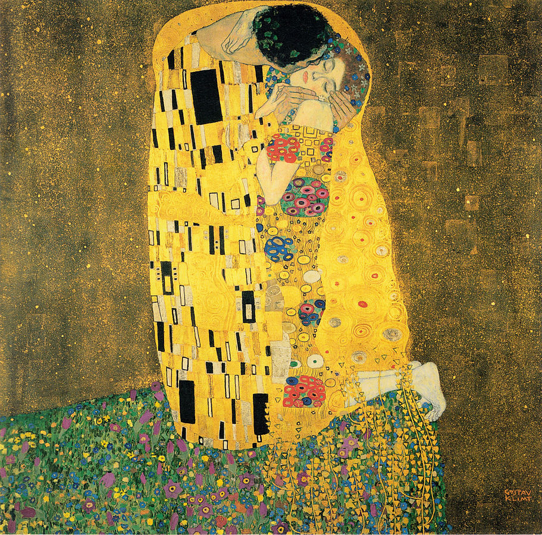

Girl with a Pearl Earring
Oil painting on canvas (c. 1665) by Dutch artist Johannes Vermeer, one
of his most well-known works. It depicts an imaginary young woman in
exotic dress and a very large pearl earring. The work permanently
resides in the Mauritshuis museum in The Hague.
Impression Sunrise by Claude Monet
This famous painting, Impression, Sunrise, was created from a scene in
the port of Le Havre. Monet depicts a mist, which provides a hazy
background to the piece set in the French harbor. The orange and yellow
hues contrast brilliantly with the dark vessels, where little, if any
detail is immediately visible to the audience. It is a striking and
candid work that shows the smaller boats in the foreground almost being
propelled along by the movement of the water. This has, once again, been
achieved by separate brushstrokes that also show various colors
"sparkling" on the sea. From the 15th April to 15th May 1874 Monet
exhibited his work together with Camille Pissarro, Alfred Sisley,
Édouard Manet, Paul Cézanne, Edgar Degas, and some other thirty artists.
They organized their exhibition on their own as they were usually
rejected at the Paris Salon. Most visitors were disgusted and even
outraged over such a graffiti. Monet's Impression, Sunrise enjoyed the
most attention and some visitors even claimed that they were absolutely
unable to recognize what was shown at all.
The Kiss, by Gustav Klimt

This well-loved work by Austrian painter Gustav Klimt depicts an
embracing couple. The Kiss is a departure from Klimt’s other paintings,
which mainly focused on women. Some art historians believe the couple
portrayed here are Klimt himself and his long-time partner, Emilie
Flöge. It’s a characteristic example of Klimt’s golden period style,
during which he mixed gold leaf into his oil paints. The painting can be
seen today at Österreichische Galerie Belvedere in
Vienna.